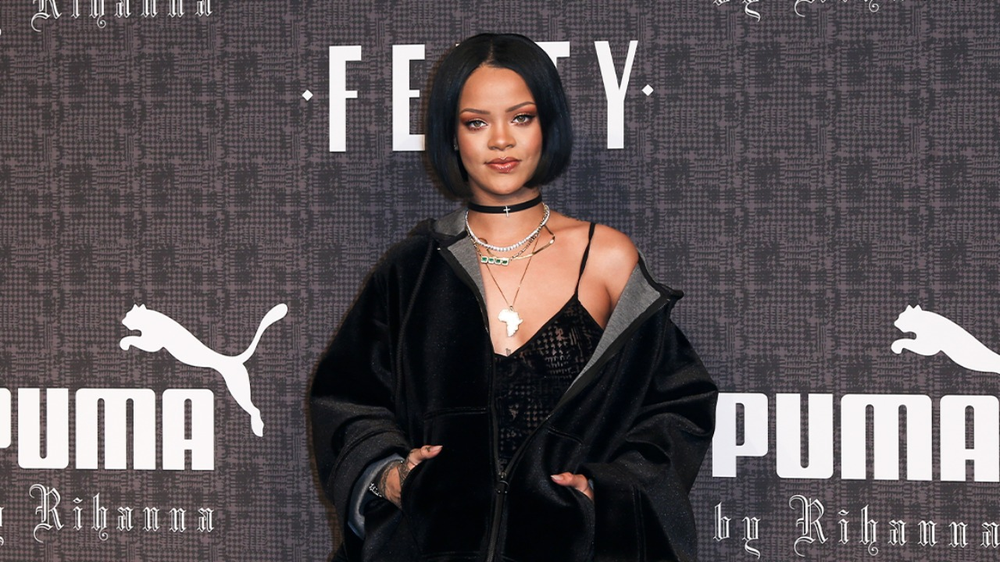

Biografía
Rihanna (nacida Robyn Rihanna Fenty el 20 de febrero de 1988 en Barbados) es una cantante, actriz, empresaria y diseñadora. Conocida por fusionar géneros caribeños con música pop, se ha convertido en un ícono de la música y la moda, siendo apodada «Princesa del R&B» y «Reina de la Moda».
Rihanna saltó a la fama con su álbum Good Girl Gone Bad (2007), que incluyó el éxito «Umbrella». A lo largo de su carrera, ha lanzado exitosos álbumes como Loud (2010) y Anti (2016), colaborando con artistas como Drake, Eminem y Shakira. Su música ha abarcado pop, dance y R&B, convirtiéndola en una de las artistas más exitosas de la historia.
Además de su carrera musical, Rihanna es empresaria y activista. Fundó la Clara Lionel Foundation y creó la marca de cosméticos Fenty Beauty. Fue nombrada Héroe Nacional de Barbados en 2021 y ha participado en películas como Battleship (2012) y Ocean's 8 (2018). En 2023, encabezó el espectáculo de medio tiempo del Super Bowl LVII.
Discografía


Filmografía
Cine
- 2006: Bring It On: All or Nothing
- 2012: Battleship
- 2012: Katy Perry: Part Of Me
- 2013: This Is the End
- 2014: Annie
- 2015: Home
- 2017: Valerian and the City of a Thousand Planets
- 2018: Ocean's 8
- 2019: Guava Island
Televisión
- 2009-2010, 2012, 2015: Saturday Night Live
- 2012: Styled To Rock (versión británica)
- 2012: Oprah's Next Chapter
- 2013: Styled To Rock (versión estadounidense)
- 2015: The Voice
- 2017: Bates Motel
Galería de Fotos

{kind=link}
{kind=link}
{kind=link}
{kind=link}
{kind=link}
{kind=link}
{kind=link}
{kind=link}
{kind=link}
{kind=link}
{kind=link}
Reconocimientos
La cantante y compositora barbadense Rihanna ha recibido múltiples premios y nominaciones por su trabajo en la música, el cine y la moda. Sus premios musicales son predominantemente en las categorías de género pop, R&B y hip hop. Tines 235 premios ganados y 635 nominaciones.
Con ventas de más de 250 millones de discos en todo el mundo, Rihanna es la segunda artista musical femenina con mayores ventas de todos los tiempos. Ha obtenido 14 números uno y 31 sencillos entre los diez primeros en los Estados Unidos y 30 entradas entre los diez primeros en el Reino Unido. Sus elogios incluyen nueve premios Grammy, 13 American Music Awards (incluido el Icon Award, por su trayectoria y contribución al mundo de la música), 12 Billboard Music Awards, siete MTV Video Music Awards (incluido el Michael Jackson Video Vanguard Award, un reconocimiento entregado a músicos que han tenido un profundo impacto en la denominada «cultura MTV», a través de su discografía y videografía) seis Guinness World Records y el premio del presidente de la NAACP. Spotify le otorgó el título de la artista femenina más escuchada de todos los tiempos. La revista Billboard la nombró «artista digital» de la década de 2000, «artista Hot 100» de la década de 2010 y «artista mainstream» más importante de los últimos 20 años.En 2023, fue incluida en el puesto número 68 de la lista «Los 200 mejores cantantes de todos los tiempos» de la revista Rolling Stone.Es considerada por dos medios de comunicación estadounidense como la artista musical más influyente y exitosa del siglo xxi.Time la nombró una de las 100 personas más influyentes del mundo en 2012 y 2018. Forbes la ubicó entre las diez celebridades mejor pagadas en 2012 y 2014.A partir de 2022, es la música femenina más rica, con un patrimonio neto estimado de $1.4 mil millones.
El primer sencillo de Rihanna, «Pon de Replay», la llevó a ganar cinco premios, luego de obtener más elogios tanto para ella como para su álbum debut, Music of the Sun (2005). Su segundo álbum, A Girl Like Me (2006), le valió a la cantante más premios y nominaciones.
El tercer álbum de estudio de Rihanna, Good Girl Gone Bad (2007), se convirtió en el álbum revelación de Rihanna, y la cantante recibió una serie de premios y nominaciones en categorías más nuevas, como géneros pop y R&B. El sencillo principal, «Umbrella» le valió a Rihanna su primer Premio Grammy en 2008, mientras que los sencillos y el DVD del álbum obtuvieron otras ocho nominaciones a lo largo de 2008 y 2009. Fue nombrada Canción de la década en los Barbados Music Awards en 2010. Rated R (2009), el cuarto esfuerzo de estudio de Rihanna, produjo el sencillo «Rude Boy», que se convirtió en el principal proveedor de premios y nominaciones del álbum. Fue nominada a Canción del año en los MTV Europe Music Awards.
En 2010, la colaboración de Rihanna con Jay-Z y Kanye West, «Run This Town» le valió a Rihanna su segundo y tercer premio Grammy por mejor canción de rap y mejor colaboración de rap/cantada. Rihanna lanzó su quinto álbum de estudio, Loud en 2010. Recibió muchas nominaciones, incluidos dos premios Grammy por Álbum del año y mejor álbum de pop vocal. Además, su sencillo principal, «Only Girl (In the World)» ganó mejor grabación dance/electrónica, mientras que el segundo sencillo «What's My Name?» recibió una nominación en la misma categoría. También en 2011, Rihanna colaboró en el sencillo de éxito mundial «Love the Way You Lie» con Eminem. La canción obtuvo una serie de nominaciones y premios, incluida la nominación a seis Billboard Music Awards y tres premios Grammy. El sencillo de Kanye West «All of the Lights», lanzado en 2011 y con Rihanna como artista acreditada, fue nominado a tres premios en los Premios Grammy de 2012, y finalmente ganó mejor canción de rap y mejor colaboración de rap/cantada. Rihanna lanzó su sexto álbum de estudio, Talk That Talk en 2011, lo que le valió a la cantante un American Music Award. Su sencillo principal, «We Found Love», fue nominado a muchos premios, entre los que destaca ganar el MTV Video Music Award por Video del año en 2012 y mejor vídeo musical en la 55.ª edición de los Premios Grammy en 2013. Dos lanzamientos más del álbum, canción principal con Jay-Z y «Where Have You Been» también recibieron nominaciones a los Premios Grammy. Unapologetic (2012), el séptimo álbum de estudio de Rihanna, produjo el sencillo principal «Diamonds», que le valió a la cantante varios premios y nominaciones.
Rihanna ha ganado 9 Premios Grammy, 12 Billboard Music Awards, 13 American Music Awards (incluido el Icon Award), y 7 MTV Video Music Awards (incluido el Michael Jackson Video Vanguard Award).